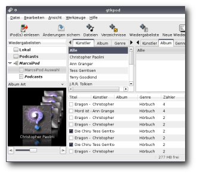
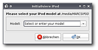
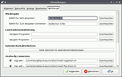
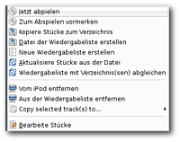

gtkpod
Archivierte Anleitung
Dieser Artikel wurde archiviert, da er - oder Teile daraus - nur noch unter einer älteren Ubuntu-Version nutzbar ist. Diese Anleitung wird vom Wiki-Team weder auf Richtigkeit überprüft noch anderweitig gepflegt. Zusätzlich wurde der Artikel für weitere Änderungen gesperrt.
Zum Verständnis dieses Artikels sind folgende Seiten hilfreich:
gtkpod  bietet eine graphische Oberfläche zur Synchronisation von Dateien zwischen einem Computer und Apples iPod. Unterstützt werden iPod, iPod nano, iPod shuffle, iPod photo und iPod mini.
bietet eine graphische Oberfläche zur Synchronisation von Dateien zwischen einem Computer und Apples iPod. Unterstützt werden iPod, iPod nano, iPod shuffle, iPod photo und iPod mini.
Das Programm unterstützt:
MP3, MP4, OGG, WAV,
Coveranzeige,
ID3tags,
Konvertierung von Datenformaten z.B. Ogg zu MP3,
normalisierung der Lautstärke,
Audio-/Videodateien (MP3, WAV, M4A, M4B und OGG) und
Wiedergabe der Stücke mit externen Programmen.

Installation¶
Zur Installation muss eines der folgenden Pakete installiert werden [1]:
gtkpod (universe)
mp3gain (universe, bringt MP3's auf ein einheitliches Lautstärkeniveau)
gpodder (universe, für die Nutzung von Podcasts)
 mit apturl
mit apturl
Paketliste zum Kopieren:
sudo apt-get install gtkpod mp3gain gpodder
sudo aptitude install gtkpod mp3gain gpodder
Nach erfolgreicher Installation ist das Programm unter "Anwendungen -> Unterhaltungsmedien" (GNOME) bzw. "Applications -> Multimedia" (Xfce) zu finden.
Kompilieren¶
Für das kompilieren sind folgende Pakete notwendig [1]:
libid3tag0-dev
libgtk2.0-dev
libglade2-dev
flex
mit apturl
Paketliste zum Kopieren:
sudo apt-get install libid3tag0-dev libgtk2.0-dev libglade2-dev flex
sudo aptitude install libid3tag0-dev libgtk2.0-dev libglade2-dev flex
Danach lädt man sich die aktuellste Version von gtkpod-VERSIONSNUMMER.tar.gz sowie von libgpod-VERSIONSNUMMER.tar.gz von der Projektseite herunter und kompiliert diese [2].

Bedienung¶
Nach dem ersten Programmstart erscheint der Einrichtungsdialog. Hier wählt man das passende Gerät aus. Unterstützt werden hier Geräte von der ersten bis zur sechsten Generation. Durch einfaches Navigieren durch das Menü findet man schnell das gewünschte Modell. Dieses wird sofort erkannt und eingebunden. Alle Daten werden in ~/.gtkpod gespeichert.
Menü¶
Das Programm ist intuitiv zu bedienen. Der Menüaufbau unterteilt sich wie folgt:
| Menü | |
| Element | Bedeutung |
| iPod einlesen | |
 | Änderungen auf dem iPod speichern |
| einzelne Musik-/Videodateien hinzufügen | |
| Ordner hinzufügen | |
| Wiedergabeliste hinzufügen | |
| neue Wiedergabeliste erstellen | |
Hinweis:
Beim iPod Touch / iPhone bricht der Synchronisationsvorgang ab, wenn die Tastensperre gesetzt ist. Man sollte daher beim Synchronisieren die automatische Sperre ausschalten bzw. dauernd auf dem Display herumwischen, um den Autolock hinzuhalten.

Einstellungen¶
Bevor mit dem Programm gearbeitet wird, sollten die grundlegenden Einstellungen noch angepasst werden. Unter "Bearbeiten -> Einstellungen ändern" wird der Einstellungsdialog geöffnet:
| Einstellungen | |
| Reiter | Bedeutung |
| "Allgemein" | Einhängepunkt/Gerät sowie Einstellungen beim Hinzufügen/Aktuallisieren/Abgleichen verändern |
| "Meta-Infos" | Einstellungen zu Tags, Cover (Kriterien nach denen das Cover gesucht wird) und mserv vornehmen |
| "Anzeige" | angezeigte Informationen (Album, Genre, Bewertung ...) |
| "Bearbeiten" | Sicherheitsabfrage beim Löschen (de)aktivieren und Einstellungen ID3-Tags sowie Wiedergabelisten betreffend |
| "Werkzeuge" | externen Player festlegen, Optionen/externe Programme für Kalender/Kontakte/Notizen einstellen und Pfade zu externen Skripten ändern |
Dateien¶
Es gibt mehrere Möglichkeiten, Musik- oder Videodateien auf den iPod zu übertragen:
Hinzufügen¶
Drag und Drop¶
Zuerst muss der iPod aktiviert werden, indem man den entsprechenden Button anwählt. Nun die gewünschten Audio-/Videodateien bzw. Ordner im Dateimanager markieren und dann per Drag & Drop in das gtkpod-Fenster ziehen. Die ausgewählten Dateien und Ordner werden der Liste hinzugefügt. Auch im Vorfeld erstellte Wiedergabelisten können so auf den iPod gespielt werden. Abschließend mit die Änderungen anwenden.
Hinzufügendialog¶
Den iPod mittels des Buttons aktivieren. Nun durch Auswahl der entsprechenden Schaltfläche Dateien, Ordner oder Wiedergabelisten hinzufügen. Im Anschluss die Änderungen mit abspeichern.

Löschen¶
Um eine oder mehrere Dateien zu entfernen einen Rechtsklick auf diese ausführen. Im sich nun öffnenden Dialog "Vom iPod entfernen" auswählen und die Änderungen mit wirksam machen und bestätigen.
Sortieren¶
Die Reihenfolge, in der die einzelnen Einträge angezeigt werden, lässt sich fast beliebig einstellen. Hierzu dient der Punkt "Sortierung" im Menü "Bearbeiten". Es öffnet sich ein Dialogfenster, in dem die gewünschten Einstellungen vorgenommen werden können. Die eingestellte Sortierung hat dabei nur Einfluss auf die Reihenfolge innerhalb von gtkpod, nicht jedoch im iPod. Dort werden die Stücke nach den in den Tags zugewiesenen Titeln bzw. den CD- und Track-Nummern angezeigt.
Wiedergabe¶
Um aus dem Programm heraus Musikstücke anzuhören führt man einen Rechtsklick auf die gewünschte Datei aus und wählt im Dialog den Punkt "Jetzt abspielen". Die Datei wird dann in dem eingestellten Player wiedergegeben.
Wiedergabeliste¶
Durch kann man eine neue Wiedergabeliste erstellen. Um Lieder in diese zu kopieren zieht man einfach die Dateien auf die entsprechende Wiedergabeliste. Diese lokalen Listen können schon im Vorfeld erstellt und beim nächsten synchronisieren an das Gerät übertragen werden.
Cover¶
gtkpod zeigt Cover von Dateien an die z.B. mittels EasyTAG eingebettet oder im Ordner hinterlegt wurden. Sofern keines vorhanden ist oder dieses nicht eingelesen werden kann wird das Vorgabecover angezeigt. Damit das Programm bereits hinterlegte Cover innerhalb eines Ordners findet muss man im Vorfeld unter Meta-Infos die entsprechenden Suchregeln festlegen.
Um Cover hinzuzufügen gibt es die Möglichkeit einen  Rechtsklick auf das Vorgabecover auszuführen und im sich nun öffnenden Auswahlmenü den entsprechenden Weg zu wählen.
Rechtsklick auf das Vorgabecover auszuführen und im sich nun öffnenden Auswahlmenü den entsprechenden Weg zu wählen.
| Cover | |
| Text | Bedeutung |
| "Select Cover from file" | Auswahl einer lokal gespeicherten Bilddatei |
| "Find Cover on Web" | Cover aus dem Internet herunterladen |
| "View Full Size Artwork" | Cover in Originalgröße anzeigen lassen |
| "Bearbeite Stücke" | ID3-Tag bearbeiten |
Mittels der Navigationsleiste kann man schnell zwischen den einzelnen Covern / Tracks wählen.
Podcasts¶
Podcasts werden vom Programm derzeit noch nicht unterstützt. Abhilfe leistet hier ein Podcatcher z.B. gPodder. Hiermit den gewünschten Podcast herunterladen und die Audiodateien hinzufügen. Hier bietet sich an, die Podcast-mp3 in den dafür vorgesehenen Ordner des iPods zu verschieben, damit diese dort unter "Podcasts" zu finden sind.
Werkzeuge¶
Kalender / Kontakte / Notizen¶
Damit die Daten abgeglichen werden können, müssen vorher in den Einstellungen die passenden externen Programme hinterlegt worden sein. Anschließend sind diese unter Werkzeuge editierbar.
Kalender¶
iPods ab der zweiten Generation haben einen Kalender zum Anzeigen von Terminen integriert. Diese kann man jedoch nur über externe Programme pflegen. In einem geeigneten Programm, welches die Datenspeicherung im iCal-Format unterstützt z.B. Orage, die Termine eingeben und abspeichern. Die Datei muss auf .ics enden. Nun diese mittels des bevorzugten Dateimanagers in den Ordner /media/IPODNAME/Calendars kopieren.
Kontakte¶
Kontakte können mit einem Programm z.B. Evolution erstellt und als vCard (.vcf) exportiert werden. Die Kontaktdaten lediglich in den Ordner mittels eines Dateimanagers in den Ordner /media/IPODNAME/Contacts kopieren. Der Aufbau der Datei.
Notizen¶
Notizen können mit einem Dateimanager in das passende Verzeichnis /media/IPODNAME/Notes auf dem iPod kopiert werden. Diese müssen jedoch im Format .txt vorliegen.
Lautstärke¶
Um die Lautstärke zu normalisieren wählt man unter "Werkzeuge -> Lautstärke normalisieren" die gewünschte Option. Neben einzelnen Stücken können unter anderem neue Stücke angepasst werden.
WAV¶
Um WAV Dateien umzuwandeln muss man unter "Bearbeiten -> Einstellungen ändern -> Werkzeuge -> On-the-fly Conversion" den Punkt "WAV with" /usr/share/gtkpod-aac/scripts/convert-wav2mp3.sh aktivieren. Nun ist es dem Programm möglich diese Dateien zu konvertieren.
Tipps & Tricks¶
Ogg¶
gtkpod ist in der Lage Ogg-Dateien in Mp3-Dateien umzuwandeln. Hierfür muss man die folgenden Pakete installieren [1]:
vorbis-tools
lame (multiverse)
mit apturl
Paketliste zum Kopieren:
sudo apt-get install vorbis-tools lame
sudo aptitude install vorbis-tools lame
Jetzt konvertiert gtkpod die Lieder automatisch beim Synchronisieren mit dem iPod.
Tastenkürzel¶
| gtkpod | |
| Taste(n) | Funktion |
| Strg + P | Einstellungen ändern |
| Strg + I | Infofenster |
| Strg + Q | Programm beenden |
- Erstellt mit Inyoka
-
 2004 – 2017 ubuntuusers.de • Einige Rechte vorbehalten
2004 – 2017 ubuntuusers.de • Einige Rechte vorbehalten
Lizenz • Kontakt • Datenschutz • Impressum • Serverstatus -
Serverhousing gespendet von